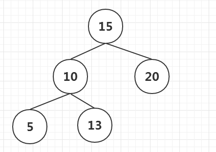
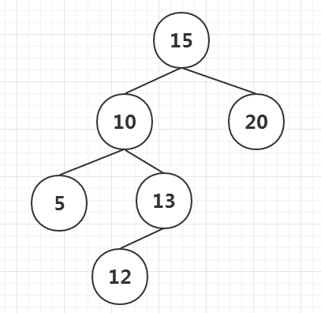
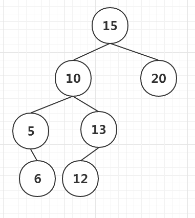
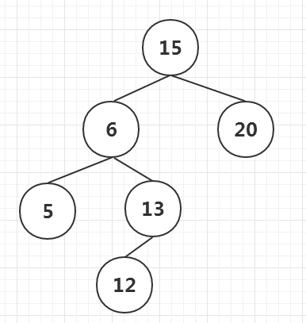
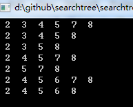

最近复习了二叉搜索树的基础知识，总结下，然后用C++实现二叉搜索树的插入，删除，查找等，也是为了实现红黑树做铺垫。
一个二叉搜索树结构如下，父节点做子树都比父节点小，右子树都比父节点大。

插入节点12后，如下

删除的情况，删除节点A，判断节点A是否为叶子节点，如果是叶子结点直接删除即可。如果叶子A有且仅有一个子节点B，那么用B替代节点A。
如果节点A有两个子节点，找到前驱节点B，用前驱节点B(或者后继节点)替代节点A。有一种特殊的情况，就是前驱节点有左孩子，或者后继节点有右孩子，
这种情况需要仔细考虑。仅拿前驱节点举例子，前驱节点的父节点为C，前驱节点的左孩子为D，那么将D的父节点间设置为C，C的子节点设置为D。如果前驱节点B有右孩子怎么办？B是不可能有右孩子的，否则他的右孩子就是节点A的前驱节点。因为对于一个双子树的节点，他的前驱节点必然为左子树最大节点。
在这里再叙述一下如何查看一个节点的前驱节点和后继几点：前驱节点：1 如果节点A有左子树，那么他的前驱节点为左子树中最大的节点。2 如果节点A没有左子树，需要考察节点A的父节点，如果节点A是其父节点的右孩子，那么父节点为前驱节点，否则将父节点设置为当前节点A，继续向上查找，直到找到某个节点为其父节点的右孩子，这个父节点就是要找的前驱节点。后继节点：1 如果节点A有右子树，那么他的后继节点为其右子树的最小节点。2 如果节点A没有右子树，那么同样遍历其父节点，找到某个节点是其父节点的左孩子，那么这个父节点就是要找的后继节点。
如图

节点10的后继节点为12，为其右子树中最小的节点。
节点10的前驱节点为6，为其左子树中最大的节点。
节点12的前驱节点为10，因为节点12没有左子树，父节点为13,12不是13的右节点，需要继续向上查找，找到节点10,13是10的右节点，节点10为12的前驱节点。
节点6的后继节点为10，同样是向父节点找，直到找到某个节点是其父节点的左子树，5是10的左子树，所以10为6的后继节点。
节点5的前驱节点为NULL，因为节点5没有左子树，所以向上查找，直到找到根节点也不满足右节点的规则，所以节点5的前驱节点为NULL
删除节点10，找到前驱节点6替换10，如果节点6有左子树，那么将左子树挂接到节点5的右节点。
如下图：

下面用代码实现上述插入，删除以及中序遍历的逻辑。
先实现树的节点
1 | class TreeNode |
实现树类
1 | class TreeClass |
有几个函数需要着重说明一下:
初始化函数，通过列表初始化为一棵树
1 | void TreeClass::initial( list<int>& data) |
中序遍历：
1 | //中序遍历 |
查找一个子树中最小节点
1 | //寻找一个子树最小节点 |
查找一个子树中最大节点
1 | TreeNode * TreeClass::findMaxNode(TreeNode * root) |
查找一个节点前驱节点
1 | //搜索前驱节点 |
查找一个节点的后继节点
1 | //搜索后继节点 |
根据数据查找某个节点
1 | TreeNode * TreeClass::findTreeNode(int i) |
某个节点有两棵子树，删除这个节点，函数如下：
1 | void TreeClass::deleteTwoChildNode(TreeNode * treeNode) |
详细的实现细节
1 | void TreeClass::preupdateNode(TreeNode * preNode, TreeNode * treeNode) |
如果节点没有子树，那么直接删除，如果节点有一颗子树，那么用该子树替代这个节点即可。
代码下载地址：
https://github.com/secondtonone1/searchtree
测试代码：
1 | int array[6]={7,4,2,5,3,8}; |
打印输出：
